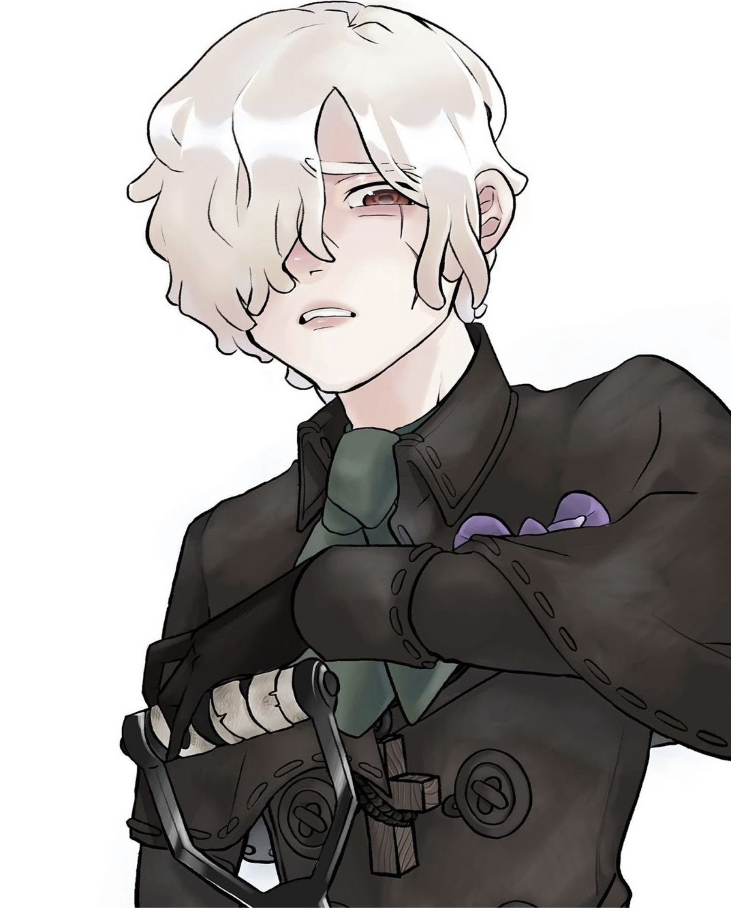
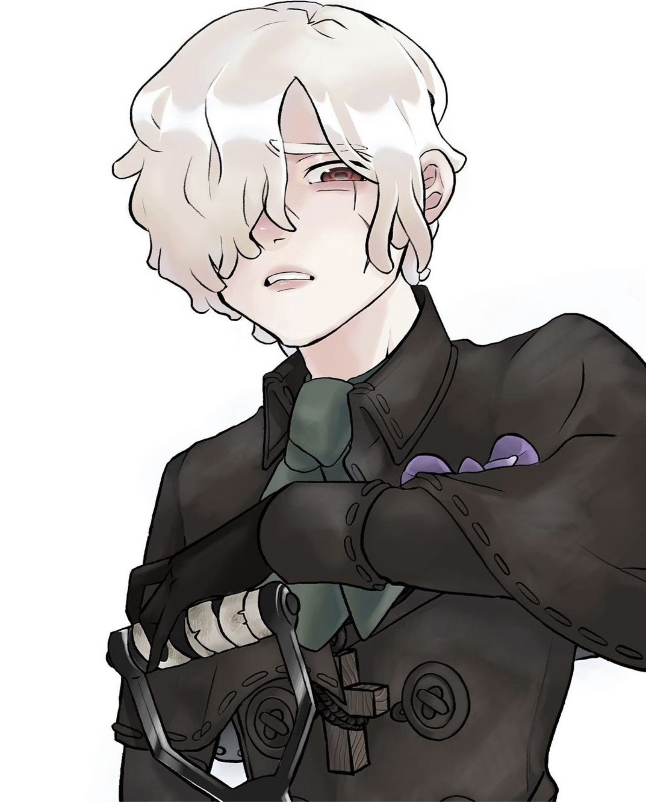
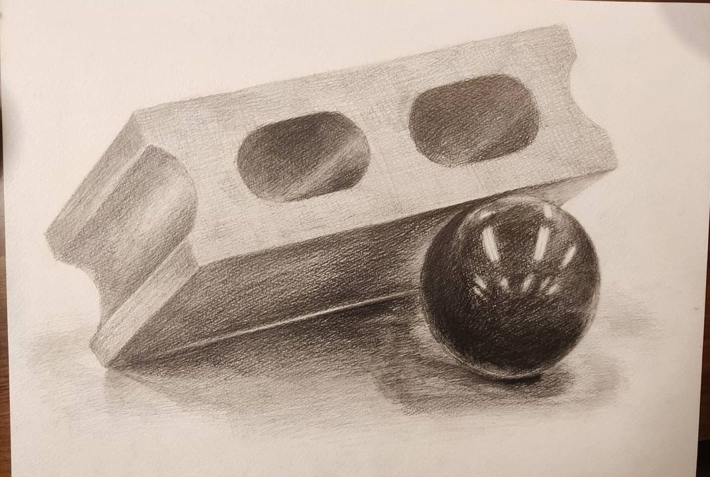
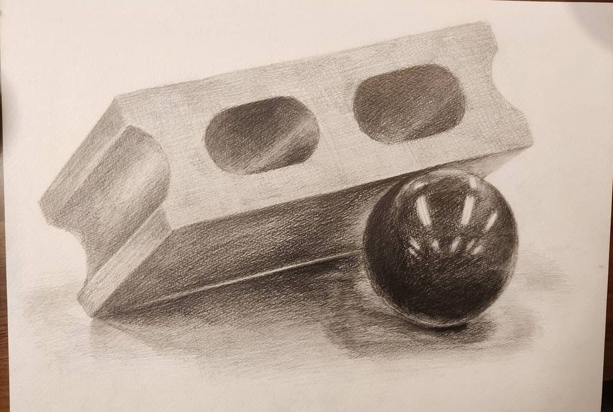

Hi Welcome to my page!🎉
i'm a Japanese freshman in high school🇯🇵
i'm learning html and drawing!
i wanted to try to make html and i will exhibit my works.
{kind=link}
at first, i drew so cute paintings. i loved sweet color and sweet works because they made me so relax.


these are my psintings that i imaged each season.
Do you which is spring, summer, autumn or winter?
second, i loved colors that i can't make on the paper.
beautiful gradation colors too.


i think these my paintings have different atmosphere. which one do you like the best?
third, i loved identityV so much.
i don't play it almost for now but when i open it, still my friend welcome me.

 



i really loved Naib so much. actually i wanted to marry with him
four, i didn't paint illustlation because of study for the high school entramce exam.
instead, i draw a lots of still life.
i'm a student of design so i needed to do still life too for the exam.


 

study for the high school entrance exam was really hard
but it told me how much getting new things and still life is fun.
parhaps after the exam, i couldn't draw pictures like before.
i couldn't draw pictures without seeing real thing.


well i like to draw like them too.
and now i love imaginary dessin. i can do anything i want in my work.

making html was really fun! i want to learn more and make better page.
i will make more works and exhibit here.
i think not so often so sometimes when you don't have anything works please come here.
thanks for you to see my page.
have a good day.